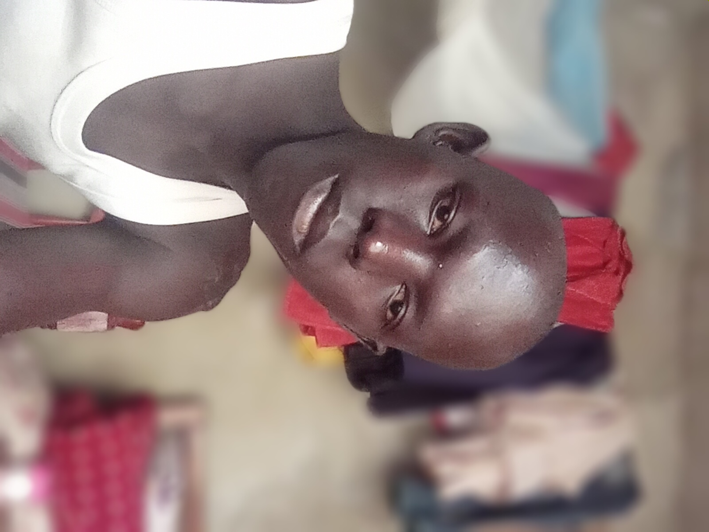
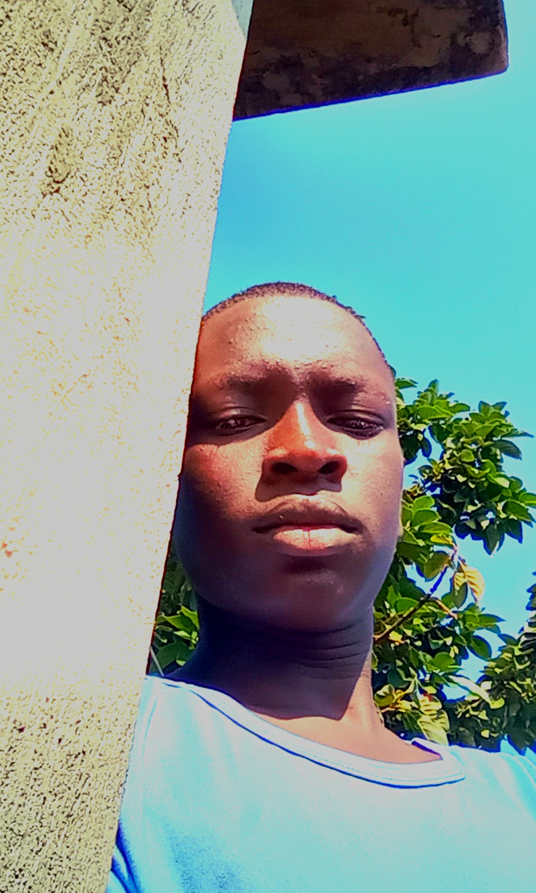

Benjamin Modi Sokiri
He is my maternal uncle. He is the one who sponsored my S3 and S4 secondary education. He is an accountant by profession and though still uprading. He is based in Juba, South Sudan though he is a dual citizen of both Uganda and South Sudan. He is married with two sons and two daugters. Married to an Acholi. The family stays in Mukono.
Adio Joice Modi
She is the wife to my uncle. She is an Acholi of South Sudan from Magwi County in Eastern Equatoria. She studied secondary in Kajo Keji county and there met my uncle. Right now, she is not working and is with the family in Mukono.

Waran Newton Mono Korsuk
I am the second son of my family. My mom is Poni Jane and Dad is Mono Charles. I am a South Sudanese citizen, registered as a refugee in Uganda, ressettled in Palorinya Refugee Camp, Doma Block 1.
Currently(April 2025), i am at Makerere University doing Bs Electrical Engineering. My tuition is not fully covered.
Poni Viola Wani
She is a daugter to one of the brother of my grand mother, Joshua Wani. She is in UCU, Mukono in her second year doing Human Resourse Management. She has gained alot from home where she handles most of the home issues. She is more of a mother. She gained the trust of our uncle and the looks after all family issues. She is the first one in her biological family to reach unversity.
Hariet
She is the new maid that was hire recently this January, 2026. She was from the refugee camp. She stays in Konyo Konyo. She droped out of school in secondary(S2). She is young and good manered.
Turo Cyrus Mono
He is my brother after me. He just finished Ordinary Level last year and passed very well. Our uncle Emma was paying his tution. However, right now he is at home because of no tuition. During holidays he goes to Kampala to work in construction site. He was not registered as a refugee.

Modi Isaac Emmanuel
He is the son of a brother to my grand mother from my side of my mother. His father is called Modi and he have other brothers and sisters.
Currently he has finished olevel and waiting to join ALevel. But he is at home because of financial issues.
Name
about him
Name
about him

Ainyo Ashlin Abigail Sokiri
She is the daughter of my only maternal uncle, the only surviving sibling of my uncle. She is in Midle class as of `26. She is studying at Global Junior School Mukono. She is a wise child and well manered. Currently, their full tution is not covered.